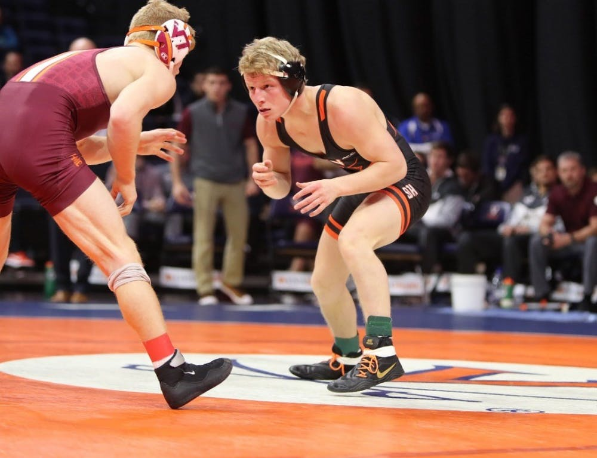

By Chad Whych | 02/02/2020

After losing all but two of their matches against No. 5 NC State last weekend, Virginia wrestling faced ACC rival No. 7 Virginia Tech Friday night at John Paul Jones Arena. The Cavaliers (7-4, 0-2 ACC) were huge underdogs against the Hokies (9-1, 1-1 ACC) and came into the match having lost nine of their last 10 duals against Virginia Tech. Furthermore, six of the starting 10 Hokies are ranked individually, compared to just two for Virginia.
Yet the Cavaliers came into the dual with high energy, looking to both upset their rivals for an ACC win and secure a point for Virginia in the Commonwealth Clash. To kick it off, senior Jack Mueller, currently ranked second in the country in the 125 lbs weight class, pinned No. 13 Virginia Tech’s junior Joey Prata for the only pinfall of the entire meet.
Following Mueller’s pinfall, junior Louie Hayes squeezed out a narrow victory against Virginia Tech redshirt freshman Collin Gerardi at 133 lbs. However, Virginia Tech would soon turn the tide as it went on to win the next six matches.
Despite losing numerous matches in a row, the Cavaliers were unfazed by the Hokies’ 20-9 team score advantage and looked to finish the meet strong.
Junior Jay Aiello — ranked No. 9 in the 197 lbs weight class — did just that, recording a major decision victory over Hokie sophomore Stanley Smeltzer.
To conclude the dual meet, sophomore Quinn Miller pulled off a close 6-4 upset victory against Virginia Tech sophomore John Borst, who was ranked No. 18 in the heavyweight class. With this win, Miller improved to 17-4 on the season and could find himself in the next set of rankings.
Although the Cavaliers finished the dual meet in exciting fashion, the Hokies would prevail by a margin of 20-16. Keeping this meet close in front of a season-high 1798 spectators was a great confidence booster for the Cavaliers.
Coach Steve Garland was proud of the growth of his team following its crushing defeat at the hands of NC State.
“After last week we told our guys they had an opportunity to respond and decide how they wanted to compete,” Garland said. “They were competitors tonight… We had a different approach and mentality tonight, and I am proud of them for that.”
Virginia will need to use this same mentality and approach this week as they travel to the Fitzgerald Field House for an ACC dual against No. 10 Pittsburgh Friday. The dual is set to start at 7 p.m. and will be broadcast on the ACC Network.